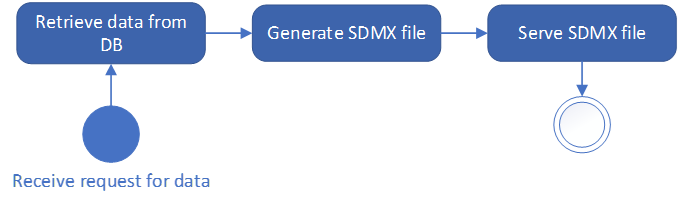

Core sdmx.io use cases#
Modelling#
Data modelling is better done through a user interface and persisting information into a database. SDMXThon is not providing either, and it does not intend to substitute or compete with proper tools for modelling purposes, like Fusion Metadata Registry. Still, SDMXTHon can provide some functionalities for quick prototyping, due to its simple API to explore and manipulate metadata, as well as the method to generate SDMX-ML messages for the data structures.
Collection#
Data collection involves the reception and integration of data from multiple providers. SDMX enables automated data collection by providing standard formats to change metadata and data.
The following chart represents a typical collection process:

A system receives an SDMX data file. The file is read, so that the data are loaded, and the related structure is obtained. Once the structure of the data is known, it is possible to validate that the data are following their required structure. Finally, if data are structurally correct, the data in the instance shall be loaded into the collection database. SDMXThon provides support to all the steps in the use case, as demonstrated with the following example.
SDMXThon allows reading SDMX instances from stored files or from the web. It can also get as input a string or BytesIO object, facilitating integration if the data reception system is written in Python.
import sdmxthon
instance = sdmxthon.read_sdmx('input_data/data.xml')
An SDMX message may contain metadata or data. The ‘type’ attribute for Message objects returns the message type, which in this case is a Structure Specific DataSet. Because it is a data file, the content of the message returns the datasets included in the file as a dictionary, with the ID of the dataflow as key.
print(instance.type)
print(instance.content.keys())
dataset = instance.content['BIS:BIS_DER(1.0)']
MessageTypeEnum.StructureDataSet
dict_keys(['BIS:BIS_DER(1.0)'])
Once the related data structure is known, we can load it by calling a webservice (implemented, for instance, by FMR). With the metadata, it is possible to perform the structural validation of the metadata.
metadata = sdmxthon.read_sdmx('https://stats.bis.org/api/v1/datastructure/BIS/BIS_DER/1.0?references=all&detail=full')
dataset.structure = metadata.content['DataStructures']['BIS:BIS_DER(1.0)']
dataset.semantic_validation()
[]
An empty list as a result of the validation means that there are no structural errors. So this means that data can be loaded into the db. The data loading depends on the specific system and its underlying datamodel. But the advantage of using Pandas is that it includes a method to write into databases, with several different RDBMS supported.
Production#
The production phase of the statistical process changes from institution to institution. But, in any case, it typically involves consistency validation (in some cases done during the collection phase) and data derivation (e.g., aggregates or calculation of new data). SDMXThon can support the statistical production by providing all the calculation capabilities included in Pandas. Because of Pandas, virtually any calculation (for validation or derivation purposes) in the production process can be done. In any case, for a production process, we strongly recommend the use of the Validation and Transformation Language (VTL). meaningfulData offers a proprietary Python library for this language, on top of some other relevant functionalities for VTL. Please refer to the example in section 4 for an explanation on how SDMXThon ca be used for data production.
Dissemination#
As with data modelling, data dissemination requires of a full system including data stored in databases and interfaces (GUIs and APIs). SDMXThon is not providing any of those, but can be used to develop a dissemination system in Python. The following chart represents a simplified version of a dissemination service:

Essentially, dissemination is the process of allowing users (human or machines) to request some data, with certain filters, and responding with the data required. To do this, it is necessary to have a system able to receive the request for data, get the data from the database, serialize them into the required format (SDMX), and serve the response. SDMXThon provides a simple interface to perform these tasks. Connection to most RDBMS is supported, which allows retrieving the required data. Once the data are loaded, the SDMX file is generated with a simple method, and can be passed as a file or StringIO to the serving system. In any case, such a dissemination system would need to be built, and it is not provided by SDMXThon. The other side of data dissemination is data analysis. Data are disseminated because some user are going to use this data for some analytical purpose (or to calculate new information to be analysed). Given that Pandas is one of the most relevant libraries for data science and data analysis, the simple interface SDMXThon is providing to retrieve the required data enables any data analyst with no or limited SDMX knowledge to benefit from all the functionalities SDMX offers.